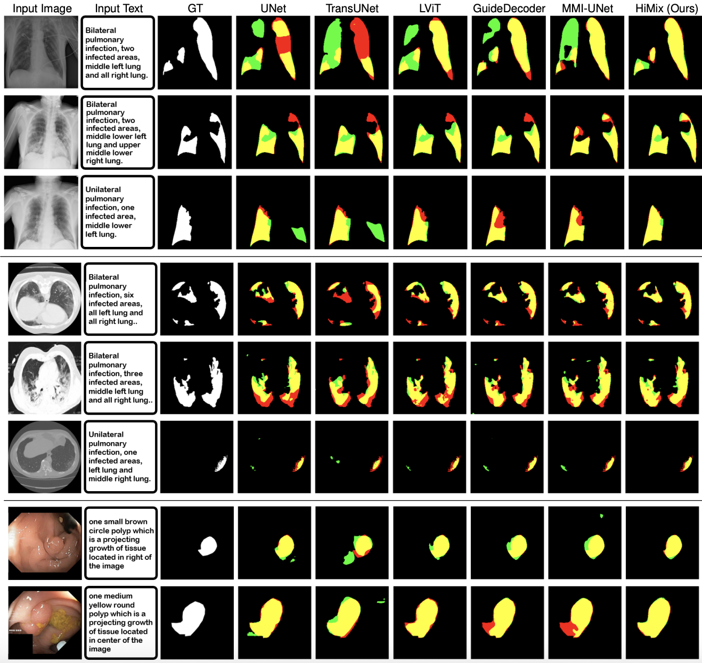

Figure: Illustration of text feature utilization strategy in our proposed approach. Multi-level linguistic features extracted from the text encoder are hierarchically aligned and passed to the corresponding decoder layers.
Figure: Illustration of key modules in HiMix. Left: Decoder with adaptive spectrum refinement module (ASRM). Right: Dynamic layer fusion module (DLFM).

Table: Quantitative comparision on segmentation of uni-modal (top) and multi-modal (middle) learning baselines, and HiMix (bottom). The best and second-best results are highlighted in bold and underlined, respectively.

Figure: Visualization of segmentation results. Results on QaTa-COV19 (top), MosMedData+ (middle) and Kvasir-SEG (bottom) datasets. Yellow, red, and green represent true positive, false negative, and false positive, respectively.
In this work, we proposed HiMix, a novel multi-modal segmentation framework that effectively aligns and leverages hierarchical representations from both image and text modalities. HiMix dynamically extracts and refines essential information from both modalities to ensure a hierarchical integration of high-level semantics and fine-grained details. Experiments on diverse medical segmentation benchmarks demonstrate that HiMix consistently outperforms state-of-the-art models, which validates the advantage of hierarchical design. Moreover, HiMix further demonstrates strong adaptability to diverse text formats, showcasing its potential for practical applicability to real-scenarios.
@inproceedings{hwang2026himix,
title={HiMix : Hierarchical Visual-Textual Mixing Network for Lesion Segmentation},
author={Hwang, Soojin and Sim, Jaeyoon and Kim, Won Hwa},
booktitle={IEEE/CVF Winter Conference on Applications of Computer Vision},
year={2026}
}